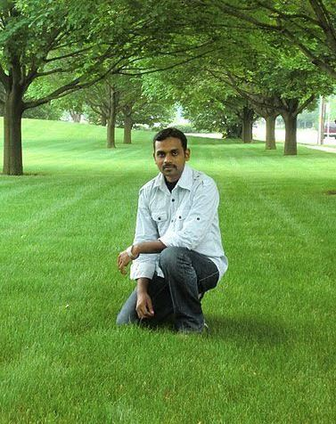

At some point of time, life usually ends, but the quest and curiosity about life and its goals never ends. I have been wading through this big ocean of lifes quest,
 I have spent a big part of my career with wide variety of Retail Partners and worked
closely with IT Support and Development Teams. During the early and Mid part of my
career, I have been in management/sales roles and helped achieve organizational goals and targets.
As part of my career I have travelled to different parts of the US, meeting various clients for new project sign-ups and end-to-end project implementations.
I have spent a big part of my career with wide variety of Retail Partners and worked
closely with IT Support and Development Teams. During the early and Mid part of my
career, I have been in management/sales roles and helped achieve organizational goals and targets.
As part of my career I have travelled to different parts of the US, meeting various clients for new project sign-ups and end-to-end project implementations.Over the past 6 years I have been working as part of Support Team in identifying and constantly improving the Support Processes in Applications, Web Portals, Hardware and Network front. In my endeavor to enhance the support processes, I have spearheaded teams of developers and support analysts. As I come from a hardware and networking background, dealing predominantly with network routers/switches, servers, data centers, etc, I also wanted to learn about how the different application and websites interact and work in helping us run our daily business. This drove me to learn coding and help enhance my skills recently.